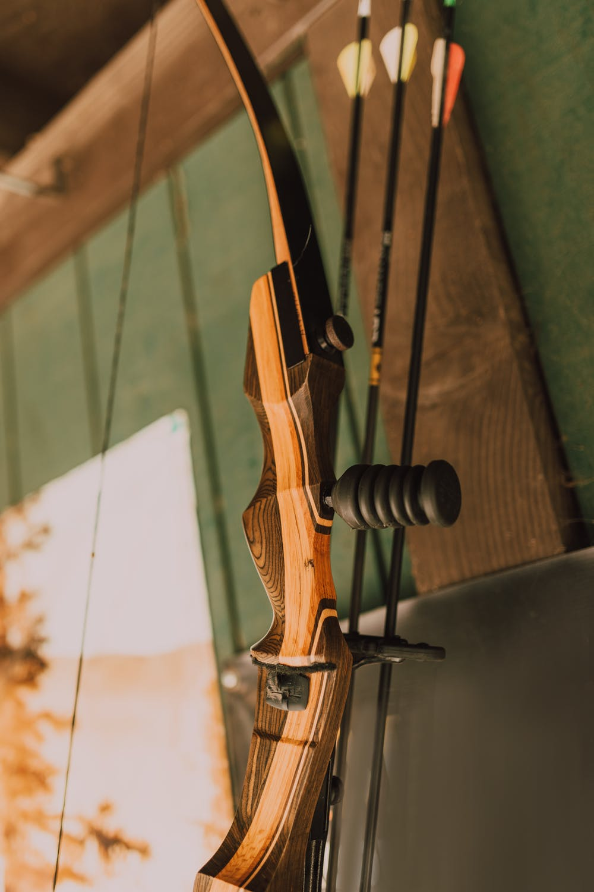

Methods
In Indiana there are a few main ways to hunt. For small game it is the stalk style hunt where a hunter walks through the woods looking
for game. Once they are spotted, the chase is on.
However, for most game there are only a couple ways to hunt them successfully. One is the treestand hunt. This is where a hunter uses some
sort of elevated structure, usually latched to a tree, but can also be a tripod, to sit and wait for the animals to walk passed. Then there is
the bling hunt. This is where a hunter sits in a transportable, camoflauge shack, that keeps them hidden from the animals and sits and waits.
Finally, there is the ground sit. This is where a hunter walks into the woods and finds some kind of concealment on the ground to sit behind
to wait for the animals. All of these methods are very successful and reliable, it just depends on the area you hunt.
Weapons
There are a host of weapons allowed to hunt in Indiana, from compound and recurve bows, to high power rifles.

A list of the weapons allowed in Indiana are as follows:
- Crossbow
- Compound Bow
- Recurve Bow
- Muzzleloader
- Shotgun (every guage from 410-12)
- 6mm-06
- 6mm BR Remington
- 6mm PPC
- 6mm Remington
- .240 Weatherby
- .243 Winchester
- .243 Winchester Super Short Magnum
- .25 Remington
- .25-06 Remington
- .270 Winchester
- .30 Carbine
- .30 Herrett
- .30 Remington AR
- .30-06 Springfield
- .30-30 Winchester
- .30-40 Krag
- .300 AAC Blackout (.300 Whisper)
- .300 H &H Magnum
- .300 Remington Short Action Ultra Magnum
- .300 Savage
- .300 Weatherby Magnum
- .300 Winchester Magnum
- .300 Winchester Short Magnum
- .300 Remington Ultra Magnum
- .303 British
- .307 Winchester
- .308 Marlin
- .308 Winchester
- .32 Winchester SL
- .35 Remington
- .350 Legend
- .38-55 Winchester
- .444 Marlin
- .45-70 Government
- 6.5 Creedmoor
- 6.8 SPC
- 7.62x39mm
- 7.62x54mmR
Public vs. Private
In Indiana public and private land are very different in the area of rules and regulations. In both places however it is illegal to bait,
snare, or trap deer to harvest them, as there is a fair chase law that must be followed. In public land treestands and ground blinds are not
allowed to be left over night. They must be brought in and taken out with the hunter. There are also public land areas that are archery only
hunting. Meaning no firearms of any kind are allowed. However, there are some places that allow firearms with certain regulations. You can find
thos regulations
here. For Private land there are not many regulations. You can hunt how
you want, when you want (as long as it is in season), and use any legal weapon in its respective season. Treestands can stay up year-round and blinds
as well. As long as you are being ethical and following the fair chase law, private land is very leniant.